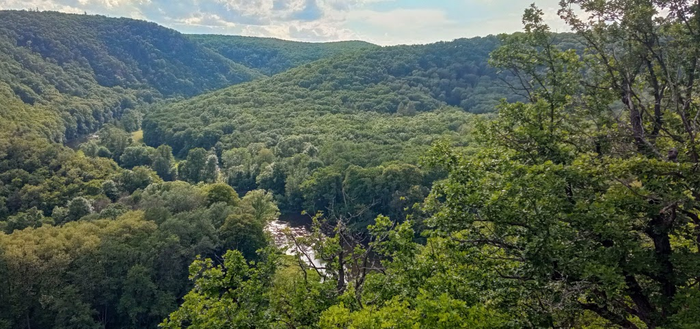
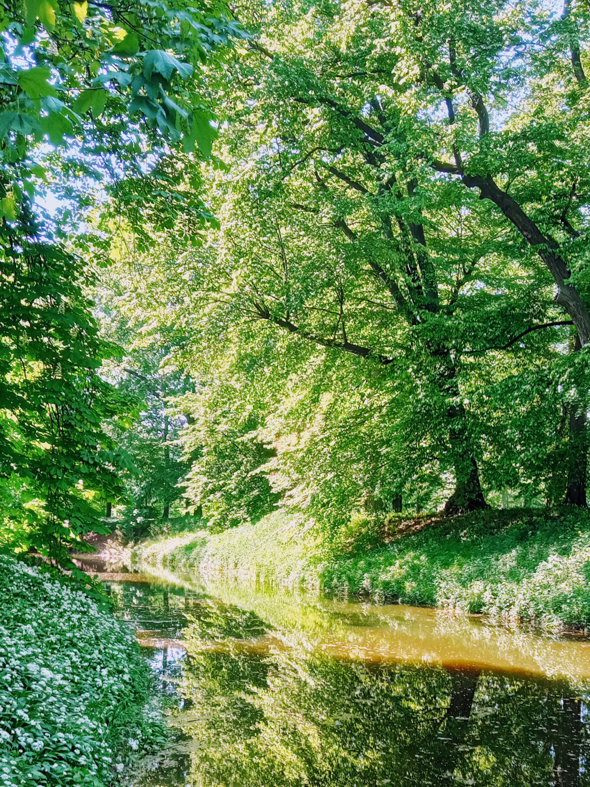

Ultreia! Sepsáno z denních poznámek

... ale v té euforii z kávy ve slunečném ránu na historickém náměstí, byť plném aut (si v Kroměříži voe..), ke mě opět přišla jedna dlouhodobá myšlenka. No může za to také včerejší debata v práci.
Hej more! Hodně se myšlenkově zabývám dobrovolnou skromností a mechanismy "chtění". Jak vzniká, že něco "chci"? Mám to hodně v souvislosti s chytrými hodinkami, které bych někdy chtěl, ale racionálně ale hlavně ani emočně mi nedávají smysl. Ale to jsem odbočil.
Jde o takový osobní experiment - pro mě samozřejmě nedosažitelný. V podstatě jde o to, že bych strávil třeba celé září, říjen i listopad někde na zahradě cvičením a meditacemi, přičemž bych jedl pouze sezonní zeleninu a ovoce, ořechy a občas jen třeba kus sýra nebo vejce, jako zdroj bílkovin.
Bylo by to radikální omezení jakéhokoli chtění věcí zvenčí. A myslím, že s cvičením a meditacemi bych to bez problémů dokázal. A to je na tom nejzajímavější. Obvykle o sobě ve všem dost pochybuju, ale v tomto ne. A proč to všechno? C-x C-s :-)
Říkám tomu poustevnický experiment. A možná by se k tomu dalo napsat víc. Třeba jen o tom, proč ho vůbec dělat? To je docela složitá otázka. Je to asi stejné "proč", proč musí Martin M. Šimečka každoročně zakotvit ve své maringotce kdesi ve slovenských horách a tam jen být, popíjet víno a běhat po kopcích. Píše o tom v knize Tělesná výchova. Je to prostě nějaká touha po transcendenci a hraničním tělesném experimentu. A zároveň psychohygiena (fuj, to je teda slovo, víckrát nepoužívat) Asi. Nejspíš...

Jak to vlastně mají s touhou po nějaké transcendenci ostatní? Zabývají se tím, nebo na to serou? Asi bych se na to zeptal třeba Romana, Ondry nebo Radima. Někdo to má, někdo ne... Ale asi jo, když se dnes s někým bavím třeba o cestě do Compostely, je to stejně běžné, jako bychom se bavili třeba o... co já vím, něčem běžném. Dřív to bylo ne přímo nemyslitelné, ale - řekněme - podivně výstřední. Pravdou ale je, že do Compostely šly z mého okolí hlavně ženy - zajímavé...
Jo, spíš hraniční tělesný experiment. Tak by se to dalo obecněji označit. Jít krajinou a pak padnout vyčerpáním, sledovat vize, pak si dát powergel nebo možná hrst pražených ovesných vloček a usnout. Druhý den zas... A třetí, čtvrtý, pátý... Takhle putovat. Vrátit se o deset kilo lehčí, s extatickým pohledem a plným deníčkem úvah.
Pak tři dny spát a integrovat to... poznámky (a poznatky) zpracovat. K devadesáti procentům poznámek se nehlásit, bude to asi dost shit, ale těch deset procent by asi stálo za to. Tipuju... Možná by to ani nebyly konzistentní úvahy, ale básně, extatická haiku... Teda zcela určitě by to nebyly konzistentní úvahy, ale něco víc meta. Asi. Nejspíš...
No jo, hlídám si své šílenství v rozumných mezích... A občas koukám, co všechno mně myšlenky přinesou...